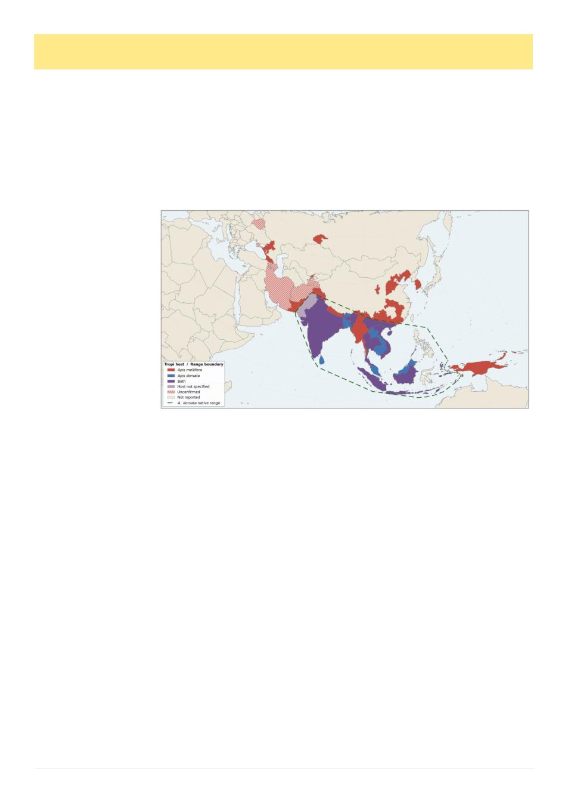

14
Australian Bee Journal
Varroa Viewpoint
By Andrew Wootton
Last month I attended two compelling meetings: the NSW Apiarists‘ Association Conference and a webinar host-
ed by the Sustainable Beekeepers Guild of Michigan. The creativity being applied to the varroa problem is inspiring.
I‘ll share some highlights.
Mount Panorama Lookout
Sam Ramsey (yes, he of fat body fame – Dr Ramsey first described how varroa feeds on this tissue rather than
haemolymph1) was there to discuss his research on the mite. He is attempting to overcome two problems, a recent
broken leg and the longer impact of Trump‘s capricious cut to his funding. Despite these hurdles, he captivated the
audience with his description of Kleptocytosis – certainly a new term for me. Calculating the energy requirements for
the mite to produce eggs every 30 hours, shows that rather than digest honey bee proteins to re-synthesize yolk pro-
teins, the mite accelerates the process by transferring the vitellogenin directly into the eggs.2 Of course, this suggests
there could be many novel interventions to obstruct mite reproduction. These will surely follow, a thrilling prospect.
Professor Ramsay also
detailed
the
emerging
threat
of
Tropilaelaps.
Worryingly,
this
more
damaging parasite is ad-
vancing on three fronts;
into Eastern Europe as
well as Central and South
Asia.3 Perhaps a little
more encouraging are the
findings that formic acid
and thermal treatments
can be effective in con-
trolling this new pest.4
Let‘s try to keep Australia
Tropilaelaps free!
Michigan Snapshot
Trevor
Bawden
of
Lloyd St Bees and Marquette University, Milwaukee, Wisconsin has devised a new way of estimating mite infesta-
tion. The Bawden Assay5 measures mites in brood rather than on the adult bees. This overcomes the shortcomings of
the existing mite wash which does not count the more relevant reproductive mites under the cappings (we know that
as many as 80% of the mites can be in the brood depending on the season). The test utilises a wax depilatory strip to
remove cappings from 200 pupated cells, followed by banging the inverted frame on a brick to dislodge the contents
(pupae plus mites). This harvest is then washed and assessed in the usual way, potentially providing a more sensitive
metric of varroa infestation. It‘s early days yet and Trevor‘s paper is still in press; we will need wider experience be-
fore we can definitively adopt and interpret the results. However, a potential bonus comes with examining the under-
side of the wax cappings on the adhesive strip. This provides information about the amount of uncapping/recapping
behaviour that the colony has been undertaking, giving insight into possible varroa resistance potential. Perhaps we
will be able to add this to the pin, liquid nitrogen, UBO and Harbo tests, all of which provide surrogate measures of
varroa resistance and are being applied in our breeding programs. Once again, one to watch and I‘ll certainly be try-
ing this assay in spring.
Acknowledgement: Thanks to Kris Fricke for his exemplary work producing the figure show-
ing Tropilaelaps distribution.
Andrew Wootton is Vice President of the VAA and a certified master beekeeper with the Eastern Apicultural Society
of N America. He first started beekeeping in the 1960s.
References
1 Ramsey, S.D., Ochoa, R., Bauchan, G., Gulbronson, C., Mowery, J.D., Cohen, A., Lim, D., Joklik, J., Cicero,
J.M., Ellis, J.D. and Hawthorne, D., 2019. Varroa destructor feeds primarily on honey bee fat body tissue and not he-
molymph. Proceedings of the National Academy of Sciences, 116(5), pp.1792-1801.
2 Ramsey, S.D., Cook, S.C., Gulbronson, C., vanEngelsdorp, D., Evans, J., Posada, F. and Sonenshine, D., 2022.
Kleptocytosis: A novel parasitic strategy for accelerated reproduction via host protein stealing in Varroa destruc-
tor. bioRxiv, pp.2022-09.
3 Tokach, R., Seshadri, A., Rogers, S.R., Chuttong, B., Jung, C. and Williams, G.R., 2026. Global range of Tropi-
laelaps mercedesae. Journal of Apicultural Research, pp.1-5.
4 Sankovitz, M., Steinhauer, N., Yemor, T., Cook, S.C., Evans, J.D. and Ramsey, S.D., 2025. Evaluation of effica-
cy of formic acid and thermal remediation for management of Tropilaelaps and Varroa mites in central Thai-
land. Journal of Apicultural Research, 64(4), pp.1049-1058.
5 https://www.lloydstbees.com/post/bawden-assay
Fig 1. Tropilaelaps mercedesae
distribution, associated Apis host
and A. dorsata native range.
By Kris Fricke, with data from
multiple sources.